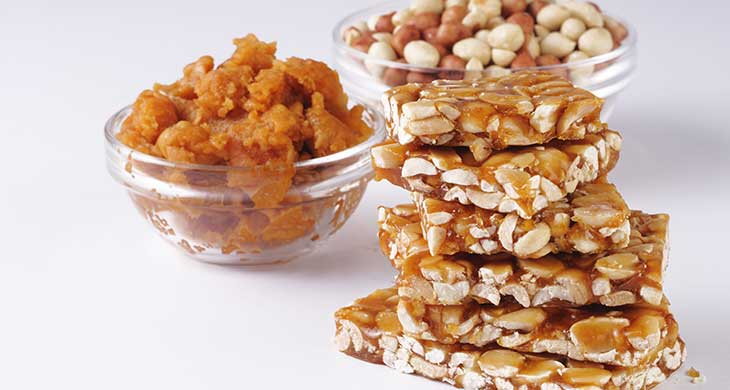

Ingredients
1.Peanuts - 1 cup (roasted)
2.Sugar/Jaggery/Brown sugar - 3/4 cup
3.Cardomon Powder - 1/4 tsp
Method
1. Melt the sugar/brown sugar in a non-stick pan till it turns honey brown in color.
2. Crush the peanuts and add it to the melted sugar with a pinch of cardomon powder.
3. Put this mixture immediately into a greased plate or tray.
4. Spread it to the desired thickness using a rolling pin.
5. Immedietly cut it with a greased knife.
6. After it cools, separate the pieces and store in air tight containers.